误差与数据处理(b)
0201
下列表述中,最能说明随机误差小的是-------------------------------------------------------( )
(A) 高精密度
(B) 与已知的质量分数的试样多次分析结果的平均值一致
(C) 标准差大
(D) 仔细校正所用砝码和容量仪器等
0202
以下情况产生的误差属于系统误差的是-----------------------------------------------------( )
(A) 指示剂变色点与化学计量点不一致
(B) 滴定管读数最后一位估测不准
(C) 称样时砝码数值记错
(D) 称量过程中天平零点稍有变动
0203
下列表述中,最能说明系统误差小的是-------------------------------------------------------( )
(A) 高精密度
(B) 与已知的质量分数的试样多次分析结果的平均值一致
(C) 标准差大
(D) 仔细校正所用砝码和容量仪器等
0204
下列各项定义中不正确的是--------------------------------------------------------------------( )
(A) 绝对误差是测定值与真值之差
(B) 相对误差是绝对误差在真值中所占的百分比
(C) 偏差是指测定值与平均值之差
(D) 总体平均值就是真值
0205
在定量分析中,精密度与准确度之间的关系是----------------------------------------------( )
(A) 精密度高,准确度必然高 (B) 准确度高,精密度也就高
(C) 精密度是保证准确度的前提 (D) 准确度是保证精密度的前提
0206
当对某一试样进行平行测定时,若分析结果的精密度很好,但准确度不好,可能的原因是----------------------------------------------------------------------------------------------------------( )
(A) 操作过程中溶液严重溅失 (B) 使用未校正过的容量仪器
(C) 称样时某些记录有错误 (D) 试样不均匀
0207
下列有关随机误差的论述中不正确的是----------------------------------------------------( )
(A) 随机误差具有随机性
(B) 随机误差具有单向性
(C) 随机误差在分析中是无法避免的
(D) 随机误差是由一些不确定的偶然因素造成的
0208
分析测定中随机误差的特点是----------------------------------------------------------------( )
(A) 数值有一定范围 (B) 数值无规律可循
(C) 大小误差出现的概率相同 (D) 正负误差出现的概率相同
0209
以下关于随机误差的叙述正确的是-----------------------------------------------------------( )
(A) 大小误差出现的概率相等 (B) 正负误差出现的概率相等
(C) 正误差出现的概率大于负误差 (D) 负误差出现的概率大于正误差
0210
在量度样本平均值的离散程度时, 应采用的统计量是------------------------------------( )
(A) 变异系数 CV (B) 标准差 s
(C) 平均值的标准差 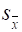
0211
对置信区间的正确理解是-----------------------------------------------------------------------( )
(A) 一定置信度下以真值为中心包括测定平均值的区间
(B) 一定置信度下以测定平均值为中心包括真值的范围
(C) 真值落在某一可靠区间的概率
(D) 一定置信度下以真值为中心的可靠范围
0212
测定铁矿中 Fe 的质量分数, 求得置信度为 95％时平均值的置信区间为35.21%±0.10%。对此区间的正确理解是--------------------------------------------------------------------( )
(A) 在已测定的数据中有95％的数据在此区间内
(B) 若再作测定, 有95％将落入此区间内
(C) 总体平均值m落入此区间的概率为95％
(D) 在此区间内包括总体平均值m的把握有95％
0213
实验室中一般都是进行少数的平行测定,则其平均值的置信区间为------------------( )
(A) 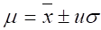 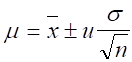
(C) 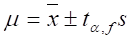 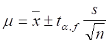
0214
指出下列表述中错误的表述--------------------------------------------------------------------( )
(A) 置信水平愈高,测定的可靠性愈高
(B) 置信水平愈高,置信区间愈宽
(C) 置信区间的大小与测定次数的平方根成反比
(D) 置信区间的位置取决于测定的平均值
0215
若已知一组测量数据的总体标准差s,要检验该组数据是否符合正态分布,则应当用----------------------------------------------------------------------------------------------------------( )
(A) t检验 (B) u检验 (C) F检验 (D) Q检验
0216
有两组分析数据,要比较它们的精密度有无显著性差异,则应当用---------------------( )
(A) F检验 (B) t检验 (C) u检验 (D) Q检验
0217
有一组平行测定所得的数据,要判断其中是否有可疑值,应采用------------------------( )
(A) t检验 (B) u检验 (C) F检验 (D) Q检验
0218
以下各项措施中,可以减小随机误差的是----------------------------------------------------( )
(A) 进行仪器校正 (B) 做对照试验
(C) 增加平行测定次数 (D) 做空白试验
0219
称取含氮试样0.2g,经消化转为NH4+后加碱蒸馏出NH3,用10 mL 0.05 mol/LHCl吸收,回滴时耗去0.05 mol/L NaOH 9.5 mL。若想提高测定准确度, 可采取的有效方法是----( )
(A) 增加HCl溶液体积 (B) 使用更稀的HCl溶液
(C) 使用更稀的NaOH溶液 (D) 增加试样量
0220
可用下列何种方法减免分析测试中的系统误差--------------------------------------------( )
(A) 进行仪器校正 (B) 增加测定次数
(C) 认真细心操作 (D) 测定时保持环境的温度一致
0221
测定试样中 CaO 的质量分数, 称取试样 0.908 g,滴定耗去 EDTA 标准溶液20.50 mL, 以下结果表示正确的是--------------------------------------------------------------------------------( )
(A) 10％ (B) 10.1％ (C) 10.08％ (D) 10.077％
0222
分析SiO2的质量分数得到两个数据:35.01％,35.42％, 按有效数字规则其平均值应表示为----------------------------------------------------------------------------------------------------------( )
(A) 35.215％ (B) 35.22％ (C) 35.2％ (D) 35％
0223
测定某有机物, 称取 0.2000 g, 溶解后加入 0.01000 mol/L I2标准溶液 10.00 mL, 回滴I2时消耗0.01000 mol/L Na2S2O3 19.20 mL, 则此测定的相对误差约是---------------------( )
(A) 千分之几 (B) 百分之几 (C) 百分之几十 (D) 百分之百
0224
已知某溶液的pH值为11.90,其氢离子浓度的正确值为----------------------------------( )
(A) 1×10-12 mol/L (B) 1.3×10-12 mol/L
(C) 1.26×10-12 mol/L (D) 1.258×10-12 mol/L
0225
下列算式的结果应以几位有效数字报出-----------------------------------------------------( )
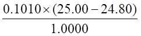
(A) 五位 (B) 四位 (C) 三位 (D) 二位
0226
下列各数中,有效数字位数为四位的是-------------------------------------------------------( )
（不全）
0227
以下计算式答案 x 应为-------------------------------------------------------------------------( )
11.05+1.3153+1.225+25.0678 = x
(A) 38.6581 (B) 38.64 (C) 38.66 (D) 38.67
0228
c・V・M
某组分的质量分数按下式计算而得: w(X) = ─────── , w(X) = 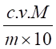
m×10
若c = （0.1020±0.0001）mol/L, V = （30.02±0.02） mL, M = （50.00±0.01）g/mol, m = （0.2020±0.0001）g ,则对w(X)的误差来说--------------------------------------------------( )
(A) 由“V”项引入的最大 (B) 由“c”项引入的最大
(C) 由“M”项引入的最大 (D) 由“m”项引入的最大
0229
在分析过程中,下列情况造成什么性质的误差(系统、随机或过失)？
(1) 在重量分析中沉淀溶解损失 ______________
(2) 称量时读错砝码 ______________
(3) 试剂中有少量干扰测定的离子 ______________
(4) 滴定管读数小数点后第二位不确定 ______________
0230
准确度高低用_____________衡量,它表示____________________________。
精密度高低用_________________衡量,它表示____________________________。
0231
容量瓶与移液管配套使用时, 若其体积关系不符合相应的比例, 会引起__________误差, 可采用______________________________减免。
0232
用NaOH滴定HAc,以下几种情况下造成的误差属于哪一类?
(1) 选酚酞为指示剂滴定至pH=9.0 ________________
(2) 选酚酞为指示剂,确定终点颜色时稍有出入 ________________
(3) 选甲基橙为指示剂滴定至pH=4.4 ________________
(4) 碱式滴定管中气泡未赶出 ________________
0233
下列情况引起实验误差的性质是:
|
试样未混匀 |
|
|
试剂中含被测组分 |
|
|
滴定时操作溶液溅出 |
|
|
滴定管最后一位读数不确定 |
|
0234
某重量法测定Se的溶解损失为1.8 mg Se,如果用此法分析约含18％ Se的试样, 当称样量为0.400 g时, 测定的相对误差是_______________。
0235（不全）
(A) w(CaO) = 25.30 % (B) [H+] = 0.0235 mol/L
(C) pH = 10.46 (D) 4200 kg
0236
根据随机误差的标准正态分布曲线,某测定值出现在u = ±1.0之间的概率为68.3％, 则此测定值出现在u>1.0之外的概率为________________________。
0237
随机误差的正态分布曲线的两个重要参数是____________________________和_______________________,它们分别表示测量结果的______________________和_______________________。
0238
正态分布曲线反映出__________误差分布的规律性;总体平均值m表示测量值分布的__________。在不存在系统误差的情况下, m就是__________;总体标准差s 表示测量值分布的_____________。
0239
有限次测量结果的随机误差遵循__________分布。当测量次数无限多时, 随机误差趋向__________分布,其规律是____________________________________; ______________ _____________________________________________________。
0240
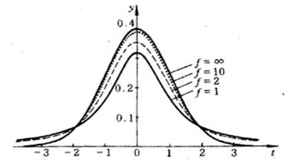 |
下图所表示的曲线称作________________曲线。图中横坐标用____________符号表示,其定义式为________________,纵坐标表示_______________。f称为______________, 其定义式为_________________。
0241
通常标准差的数值比平均偏差要__________;平均值的标准差值比单次测量结果的标准差值要________。少量测量数据结果的随机误差遵循________分布,当测量次数趋于无限次时,随机误差遵循__________分布。在少量数据的统计处理中,当测定次数相同时,置信水平愈高,则显著性水平愈__________,置信区间愈__________,判断的可靠性愈__________。
0242
用甲醛法测得某铵盐中氮的质量分数为（%）5.15 , 5.32 , 5.22 , 5.25。其平均值( 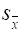 )为__________ ;标准差(s)为___________ ;其平均值的标准差(
)为__________ ;标准差(s)为___________ ;其平均值的标准差(
0243
测定某试样中Cu的质量分数,经平行测定四次,得平均值为20.10％,标准差为0.021％,则置信度为95％时的置信区间为(列式并算出结果)____________________________ __________________________________________________________。
95％置信度的t值如下:
自由度 3 4 5
t 3.18 2.78 2.57
0244
样本标准差的数学表达式为_________________________, 它比平均偏差更好地衡量一组测量值的______________________________。
0245
测定明矾中铝的质量分数，经九次测定得 = 10.79％, s = 0.042%, 查表知t0.05,8 = 2.31, 置信度为95%时平均值的置信区间是______________________________。
= 10.79％, s = 0.042%, 查表知t0.05,8 = 2.31, 置信度为95%时平均值的置信区间是______________________________。
0246
平行四次测定某溶液的浓度（mol/L）,结果分别为0.2041, 0.2049, 0.2039，0.2043。则其平均值 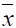 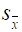
0247
在分析化学中,通常只涉及少量数据的处理,这时有关数据应根据__________分布处理; 对于以样本平均值表示的置信区间的计算式为__________________。
0248
在统计学上,把在一定概率下,以测定值为中心包括总体平均值在内的可靠范围,称为___________________,这个概率称为__________________________。
0249
用某种方法测定一纯化合物中组分A的的质量分数,共9次,求得组分A的平均值=60.68％,标准差s=0.042％。已知m=60.66％, t0.05,8=2.31
(1) 平均值的置信区间为______________________
(2) 与m之间______________________________显著差异(指有或无)
0250
实验中使用的50 mL滴定管,其读数误差为 ±0.01mL, 若要求测定结果的相对误差≤±0.1％,则滴定剂体积应控制在____________________mL;在实际工作中一般可通过__________________________或___________________________来达到此要求。
0251
实验室为检查某一新方法有无系统误差,通常可采用___________________、__________________和_____________________等进行对照试验。
0252
用分度值为0.1 g的台秤称取约20 g的物品, 最多可记录________位有效数字。如用来测定土壤水分, 要求称量的相对误差不大于2％,至少应称取土壤试样_________g。
0253
分析某试样允许测定的相对误差为1％,若试样称取量为2g左右,则应称至小数点后___________位,记录应保留____________ 位有效数字。
0254
若两次平行分析结果为62.04％和62.39％,按有效数字规则其平均值应表示为_____________。
0255
按有效数字规则记录测量结果, 最多可至:
(1) 用分度值为0.1 g的台秤准确称出5 g试样,记录为______________ g ；
(2) 用分度值为0.1 mg的天平准确称出5 g试样,记录为_____________ g ；
(3) 用10 mL量筒准确量出5 mL溶液,记录为____________________ mL ；
(4) 用50 mL滴定管准确量出5 mL溶液,记录为___________________mL 。
0256
将以下数修约为2位有效数字:
(1) 21.4565 修约为_____________________
(2) 3.451 修约为_____________________
0257 将以下数修约为4位有效数字:
0.032564 修约为_____________________
0.87246 修约为_____________________
1.03350 修约为_____________________
16.0852 修约为_____________________
0258
以下计算结果中各有几位有效数字(不必计算只说明几位)?
0.1000×(25.00-24.50)×246.47
(1) w(X) = ───────────────×100% , ____________
1.000×1000
0.1208×(25.00-1.52)×246.47
(2) w(X) = ───────────────×100% , ____________
1.000×1000
0259
0.01605 取三位有效数字为___________________ ;
21.505 取两位有效数字为____________________。
0260
以下各数的有效数字为几位 :
0.0050为____________位; 6.023×1023为_____________位 ;
p 为_______________位; pH=10.02为____________________位 。
0261
0.0684，0.04900，1.0020，pH=10.35 分别是_______，______，______，_____ 位有效数字。
0262
某同学测定铁矿中Fe的质量分数,在计算结果时,将铁的相对原子质量55.85 写作56, 由此造成的相对误差是_________________％。
0263
某学生把测定牛奶含氮量的分析结果平均值1.36％简化为1.4％,由此引起的相对误差是______________％。
0264
测得某试样中铁的质量分数为（%）20.01, 20.04, 20.04, 20.05, 20.06。计算置信度为95％时平均值的置信区间。
f 4 5 6
t0.05,5 2.78 2.57 2.45
0265
要使在置信度为95％时测量值的置信区间不超过±s,问至少应平行测定几次?
(95％置信度: f 4 5 6 7
t0.05 2.78 2.57 2.45 2.37 )
0266
已知某种测定锰的方法的标准差σ=0.12,用此法测得某试样中锰的质量分数为9.56%。假设该结果分别是一次测定、四次测定或九次测定而得到的。分别计算95％置信度时平均值的置信区间并阐述以上计算结果说明什么问题。
(置信度95％时, u = 1.96)
0267
某试样用标准方法测得三次结果为(％): 8.89 , 8.95 , 9.01 ,采用新方法测得四次结果为(％): 8.99 , 8.95 , 9.10 , 9.05 , 已知两种方法的精密度无显著性差异,问新方法是否引入系统误差? 求出新方法平均值的置信区间(置信度95％)。
附表 ta,f表值(双边) P=0.95
|
f |
2 |
3 |
4 |
5 |
6 |
|
ta,f |
4.30 |
3.18 |
2.78 |
2.57 |
2.45 |
0268
某人提出了一新的分析方法, 并用此方法测定了一个标准试样, 得下列数据(％)(按大小排列):40.00, 40.15, 40.16, 40.18, 40.20。已知该试样的标准值为40.19％(显著水平0.05),
(1) 用格鲁布斯(Grubbs)法,检验极端值是否应该舍弃?
(2) 试用t检验法对新结果作出评价。
附表(a =0.05)
|
N |
t0.05, n |
|
f |
t0.05,f (双边) |
|
4 |
1.46 |
|
2 |
4.30 |
|
5 |
1.67 |
|
3 |
3.18 |
|
6 |
1.82 |
|
4 |
2.78 |
0269
 为样本的一个统计量，可以作为
的估计值，这种估计称为
估计。
为样本的一个统计量，可以作为
的估计值，这种估计称为
估计。 不可能恰好等于 ，而 估计可以克服这种不足。
不可能恰好等于 ，而 估计可以克服这种不足。
0270
某实验室常年测定一种铁矿石中铁的质量分数w(Fe)/%，已知σ=0.15，μ=58.24%，分析结果出现在57.94% ~58.54%范围内的概率为95.44%，那大于58.54%的测量值出现的概率为 ，如果测定130次，那么大于58.54%的测量值可能有 个。
0271
称取210mg草酸纳（Na2C2O4），溶解后用待标定的高锰酸钾溶液滴定，用去30.10 mL。如果天平的精度为0.1mg，滴定管读数误差为 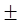
0272
用重铬酸钾测定铁矿石中的铁，称取2.2405g试样，制成250mL试液，每次移取25.00mL，用滴定度T(Fe/K2Cr2O7)=5.585 mg /mL的K2Cr2O7标准溶液滴定，5次用去标准溶液的体积分别为24.63, 24.67, 24.64, 24.61和24.65 mL。已知称量的标准偏差为0.1mg，标准溶液滴定度的标准偏差为6×10-6g/mL。试求矿石中铁质量分数w(Fe)及其相对标准偏差。
0273
用碘量法测定某铜合金中铜的质量分数w(Cu)/%，6次测定结果如下：60.60, 60.64, 60.58,60.65, 60.57和60.32。(1) 用格鲁布斯法检验有无应舍弃的异常值（显著水平0.05）； (2) 估计铜的质量分数范围（p＝95%）；(3) 如果铜的质量分数标准值为60.58%，试问测定有无系统误差（显著水平0.05）？
|
n |
4 |
5 |
6 |
|
T0.05 |
1.463 |
1.672 |
1.832 |
|
f |
4 |
5 |
6 |
|
t.0.05 |
2.776 |
2.571 |
2.447 |
0274
按有效数字修约规则，将1.6785和1.6775修约为四位有效数字时，
分别为 和 。
0275
某溶液的pH为10.25，该pH的有效数字为 位，其氢离子活度为 mol/L，氢氧根离子活度为 mol/L。
0276
某溶液氢离子浓度为2.5×10-3 mol/L，有效数字是 位，pH为 。
0277
某溶液氢离子活度为1.80×10-5 mol/L , 其有效数字为 位，pH为 。
0278
某溶液pH为2.12，该pH具有 位有效数字，其氢离子活度为 。
0279
按有效数字修约规则将2.45651和2.4565修约为四位有效数字时，分别为 和 。
0280
以正确的有效数字表示下列计算结果
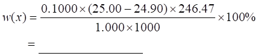
0281
为了消除0.001000 kg 中的非有效数字，应正确地表示为----------------------( )
(A)1g (B)1.0g (C)1.00g (D)1.000g
0282
为消除数据0.02500 L中的非有效数字，应表示为 。
0283
以正确的有效数字表示下列计算结果
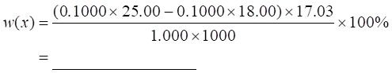
0284
对某试样测定三次，计算结果的算术平均值为32.24％，平均值的标准偏差为0.18%，正确表达的平均值应为 。
0285
下列数据中有效数字不是四位的是--------------------------------------------------- ( )
(A)0.2400 (B)0.0024 (C)2.004 (D)20.40
0286
下列数据中有效数字是四位的是----------------------------------------------------- ( )
(A) 0.780 (B)0.078 (C)7.0080 (D)7.800
0287
常量分析中，实验用的仪器是分析天平和50 mL滴定管，某生将称样和滴定的数据记为0.25 g和24.1 mL，正确的记录应为 和 。
0288
已知NH3的pKb＝4.74，则NH4+的Ka值为 。
0289
若测定的随机误差小，则精密度一定 （高、低、或不一定），而准确度 （高、低、或不一定）。
0290
四位学生用重量法同时对分析纯BaCl2×2H2O试剂中Ba的质量分数各测三次，所得结果及标准偏差如下 [Mr(BaCl2×2H2O)=244.3, Ar(Ba)=137.3]，其中结果最好的是---( )
(A) 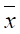
(C)=56.14 s=0.21 (D)=55.10 s=0.20
0291
对阿波罗11号从月球上取回的土样中碳的质量分数w(C) 作了四次平行测定，得到的数据(%)为1.30×10-4，1.62×10-4，1.60×10-4和1.22×10-4。则w(C) 的平均值为--（ ）
(A)1.435×10-4 (B)1.44×10-4 (C)1.40×10-4 (D)1.4×10-4
0292
一标准水样中Pb2+的质量浓度r(Pb2+)=5.03mg/L , 三次测定结果（mg/L）为 5.00，5.02，5.04, 计算测定结果的绝对误差和相对误差。
0293
某一测定有机物中Br的质量分数的方法有一个恒定误差为-0.20 mg Br，如果被分析的物质其w(Br)≈10%，试计算所取试样分别为（a）10mg；(b)50mg；(c)100mg时测定的相对误差和绝对误差各是多少？
0294
为测定某试样中钒的质量分数，称样1.000g，经处理后还原为VO2+，用KMnO4标准溶液滴定，消耗1.50mL，计算得w(V)=1.27%。此测定结果的相对误差为---------（ ）
（A）万分之几 （B）千分之几 （C）百分之几 （D）百分之几十
0295
指示剂的变色点与化学计量点不一致所引起的终点误差属于 ；每次滴定判断终点的不确定性属于 。
0296
对于精密度高的测量，随机误差 （大、小或不一定），
系统误差 （大、小或不一定）。
0297
滴定管读数最后一位估计不准属于 误差；天平砝码有轻微锈蚀所引起的误差属于 误差。
0298
对一个w(Cr)=1.30%的标样，测定结果为1.26%，1.30%，1.28%。则测定结果的绝对误差为 ，相对误差为 。
2201
下列滴定分析操作中会产生系统误差的是--------------------------------------------------( )
(A) 指示剂选择不当 (B) 试样溶解不完全
(C) 所用蒸馏水质量不高 (D) 称样时天平平衡点有±0.1mg的波动
2202
做滴定分析遇到下列情况时,会造成系统误差的是----------------------------------------( )
(A) 称样用的双盘天平不等臂
(B) 移液管转移溶液后管尖处残留有少量溶液
(C) 滴定管读数时最后一位估计不准
(D) 确定终点的颜色略有差异
2203
重量法测定硫酸盐的质量分数时以下情况可造成负系统误差的是------------------( )
(A) 沉淀剂加得过快 (B) 过滤时出现穿滤现象而没有及时发现
(C) 沉淀的溶解损失 (D) 使用定性滤纸过滤
2205
用邻苯二甲酸氢钾标定NaOH溶液浓度时会造成系统误差的是-----------------------( )
(A) 用甲基橙作指示剂 (B) NaOH溶液吸收了空气中的CO2
(C) 每份邻苯二甲酸氢钾质量不同 (D) 每份加入的指示剂量不同
2206
用重量法测定试样中SiO2的质量分数时能引起系统误差的是------------------------( )
(A) 称量试样时天平零点稍有变动 (B) 析出硅酸沉淀时酸度控制不一致
(C) 加动物胶凝聚时的温度略有差别 (D) 硅酸的溶解损失
2207
玻璃容器对某些离子有吸附作用,对于不太稀的溶液,它所引起的误差通常可以忽略不计,对于浓度极稀的组分来说,吸附作用引起的误差应为______误差。(系统误差或随机误差)
2208
用一种新方法测定纯BaCl2・2H2O试剂(Mr=244.27)中Ba的质量分数,三次结果分别为56.20, 56.14, 56.17(%),测定结果的绝对误差为______，相对误差为______。[已知Ar(Ba)=137.33]
2209
在滴定分析中若指示剂的变色点与化学计量点恰好相同,____(能或不能)说滴定误差为零。这是因为___________________________________________________________________ ____________________________________________________________________________。
2210
用四种分析方法来分析已知铝质量分数为24.83%的标准试样,这四种方法所测得的平均结果(%)和标准差(%)如下:
(A) 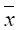
(C) = 24.90, s = 2.53 (D) = 23.64, s = 0.38
四种方法中最优的是______,差的是______和______。其中______存在系统误差,若找出原因可加以校正。
2211
若重量法测定钡带来的溶解损失为0.29 mg Ba,用此法分析约含60%Ba的试样,那么当称样量为0.20 g时结果的相对误差为多少?
2212
纯KCl试样中w(Cl)(%)的六次分析结果分别为:47.45, 47.33, 46.88, 47.24, 47.08,46.93。计算(a)平均值;(b)标准差;(c)相对标准差;(d)绝对误差; (e)相对误差。
[已知Mr(KCl)=74.55,Ar(Cl)＝35.4]
2213
用光度法测定某含磷量为0.030%的标钢试样,五次分析结果(%)为0.025, 0.029, 0.026, 0.032, 0.034。求测定的绝对误差和相对误差各为多少?
2214
下面哪种说法不符合正态分布的特点--------------------------------------------------------( )
(A) 大误差出现的概率小,小误差出现的概率大
(B) 绝对值相同,正负号不同的误差出现的概率相等
(C) 误差为零的测量值出现的概率最大
(D) 各种数值的误差随机出现
2215
随机误差符合正态分布,其特点是-------------------------------------------------------------( )
(A) 大小不同的误差随机出现 (B) 大误差出现的概率大
(C) 正负误差出现的概率不同 (D) 大误差出现的概率小,小误差出现的概率大
2216
按正态分布(m-s)≤x≤(m+s)出现的概率为--------------------------------------------------( )
(A)│u│= 0.5 P = 0.38 (B)│u│= 1.0 P = 0.68
(C)│u│= 1.5 P = 0.87 (D)│u│= 2.0 P = 0.95
2217
以下有关系统误差的论述错误的是-----------------------------------------------------------( )
(A) 系统误差有单向性 (B) 系统误差有随机性
(C) 系统误差是可测误差 (D) 系统误差是由一定原因造成
2218
以下有关随机误差的论述正确的是-----------------------------------------------------------( )
(A) 正误差出现概率大于负误差 (B) 负误差出现概率大于正误差
(C) 正负误差出现的概率相等 (D) 大小误差出现的概率相等
2219
对正态分布特性描述错误的是-----------------------------------------------------------------( )
(A) 在x=处有最大值
(B) m值的任何变化都会使正态曲线沿着x轴平移,但曲线的形状不变
(C) 改变s会使峰加宽或变窄,但m仍然不变
(D) 在x=±s处有两个拐点
2220
正态分布的m称为__________,s称为___________,其曲线的概率密度函数为______ _____________。
2221
正态分布函数中的两个参数分别为______和______。
2222
以下有关随机误差的论述错误的是-----------------------------------------------------------( )
(A) 随机误差有随机性 (B) 随机误差呈正态分布
(C) 随机误差是可测误差 (D) 随机误差无法避免
2223
实验中出现以下情况引起随机误差的是-----------------------------------------------------( )
(A) BaSO4重量法测定硫时,加HCl过多 (B) 天平两臂不等长
(C) 砝码受腐蚀 (D) 滴定管最后一位估计不准
2224
以下论述正确的是--------------------------------------------------------------------------------( )
(A) 单次测定偏差的代数和为零 (B) 总体平均值就是真值
(C) 偏差用s表示 (D) 随机误差有单向性
2225
想通过一组分析数据来反映该样本所代表的总体,下面必不可少的量是-------------( )
(A) 样本平均值
(B) 样本标准差 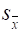
(C) 样本容量n (D) 自由度f
2226
对某试样平行测定n次,量度所测各次结果的离散程度最好选用---------------------( )
(A) d (B) s (C) (D) s
2227
表示一组数据离散特性的最好标志是--------------------------------------------------------( )
(A)全距 (B)偏差 (C)平均偏差 (D)标准差
2228
总体平均值的95%置信区间的含义是--------------------------------------------------------( )
(A) 有95%的测量值包含在此区间内
(B) 平均值落在此区间的概率为95%
(C) 有95%的把握该区间把总体平均值m包含在内
(D) 测量值x落在对m左右对称的区间
2229
关于总体平均值的概念不正确的理解是-----------------------------------------------------( )
(A) 随机变量有向某个中心值集中的趋势
(B) 无限多次测定的平均值即为总体平均值m
(C) 总体平均值就是真值
(D) 标准正态分布的m=0
2230
测定铁矿中铁的质量分数四次结果的平均值为56.28%,标准差为0.10% 。置信度为95%时总体平均值的置信区间(%)是---------------------------------------------------------------------( )
(A) 56.28±0.138 (B) 56.28±0.14
(C) 56.28±0.159 (D) 56.28±0.16
t(0.95,3)=3.18, t(0.95,4)=2.78
2231
平均值的精密度应比单次测定的精密度_____,也即比s _____。
当测定次数不多时,随测定次数增加平均值的标准差____,当测定次数大于10 次时, 的____就很小了。通常平行测定____次即可。
2232
三次标定NaOH溶液浓度（mol/L）的结果为0.1085,0.1083,0.1086,相对平均偏差为多少?
2233
用光度法测定微量铁的的质量分数,四次测定结果(%)分别为0.21,0.23,0.24,0.25,试计算分析结果的平均值,个别测定值的平均偏差,相对平均偏差,标准差和变异系数。
2234
测定矿石中TiO2的质量分数,六次结果平均值为58.62%,标准差为0.11%,求:
(a) 平均结果在90%置信度的置信区间;
(b) 若上述结果是四次测定的结果,平均值在95%置信度的置信区间。
已知t(0.90,5)=2.02, t(0.90,6)=1.94, t(0.95,3)=3.18, t(0.95,4)=2.78。
2235
对某试样进行四次分析结果(%)如下:29.03,29.08,28.97,29.24,试用Q检验法确定离群值29.24%是否舍弃;并计算平均值的置信区间?
[t(0.90,2)=2.92, t(0.90,3)=2.35, t(0.90,4)=2.13, Q(0.90,4)=0.76]
2236
纯明矾中铝的质量分数为10.77%,用某方法测定9次结果为(%):10.74, 10.77, 10.77, 10.77, 10.81, 10.82, 10.73, 10.86, 10.81,求该方法的相对误差。并考察95%置信度的置信区间是否包括真值在内。[t(0.95,8)=2.31]
2238
测定某铜矿中铜的质量分数(%)，四次结果分别为:40.53,40.48,40.57,40.42,求置信水平为90%和95%时总体平均值的置信区间,已知t值:
|
f P |
0.90 |
0.95 |
|
2 |
2.92 |
4.30 |
|
3 |
2.35 |
3.18 |
|
4 |
2.13 |
2.78 |
2239
用已知标准差为0.041的测定氯的方法重复三次测定某粗盐试样,结果平均值为51.46%,计算当置信度分别为90%(u=1.64)和95%(u=1.96)时的置信区间,并加以比较。
2240
已知某铜样中铅的质量分数为0.105%,用一种光谱分析法测定结果为0.109%,标准差为0.008%,
(a) 若此结果为四次测定的平均值,置信度95%时能否认为此方法有系统误差存在?
(b) 若此结果是大于20次测定的平均值,能否认为有系统误差存在?
已知t0.95,3=3.18; t0.95,20=2.09
2241
分析血清中钾的质量浓度（mg/mL）, 四次测定结果分别为0.154,0.156,0.160,0.163,计算95%置信水平的置信区间(t0.95,3=3.18)。
2242
用气相色谱法测定汽车尾气中CO的质量分数的标准差为0.80mg/g。若使95%置信度的置信区间为±0.50(mg/g)时需进行几次测定?(95%置信度时u=1.96)
2243
用某种方法多次分析含镍的铜样,确定镍的质量分数为0.520%,标准差0.070%。某人对此样四次测定的平均值为0.532%,此结果是否满意(置信度95%时u=1.96)。
2244
电分析法测定某患者血糖的浓度（mmol/L）， 10次结果为:7.5, 7.4, 7.7, 7.6, 7.5, 7.6, 7.6, 7.5, 7.6, 7.6,求相对标准差及置信度95%的置信区间,此结果与正常人血糖的质量分数6.7mmol/L是否有显著性差异?
|
f |
8 |
9 |
10 |
|
t0.05 |
2.31 |
2.26 |
2.23 |
2245
用原子吸收法和示波极谱法测定猪肝标样中的锌的质量分数(mg/g),结果如下:
原子吸收法 示波极谱法
1=146 2=138
s1=7 s2=12
n1=5 n2=6
试问这两个平均值是否有显著性差异?(置信度90%)
已知F0.05,4,5=5.19, F0.05,5,4=6.26, t0.10,9=1.83
2246
两组分析结果的平均值和标准差分别为:
1=0.019 2=0.020
s1=0.0026 s2=0.0022
n1=20 n2=20
试问: (a)s1和s2是否有显著性差异?
(b)确定两个平均值是否有显著差异?
已知F0.05,19,19=2.18; t0.05,38=2.02
2247
用络合滴定法测定试样中铁的质量分数,六次结果的平均值为46.20%,用氧化还原法测定时四次结果平均值为46.02%,若二者的标准差均为0.08%,两种方法所得结果有显著性差异吗?(置信度95%)
已知t0.05,8=2.31; t0.05,9=2.26; t0.05,10=2.23
2248
一组测量值为14.64,14.41,14.46,14.44,用Q检验法(90%置信度Q0.90,4=0.76)判断14.64这个值是否应舍弃。
2249
已知分析海水中金的方法的标准差为2.5×10-11mol/L,测定结果为5.9×10-10 mol/L。试计算95%置信度时：
(a) 此结果为单次测定的置信区间;
(b) 此结果为三次测定平均值的置信区间。
已知置信度为95%时u=1.96 。
2250
某海港发现海水被油污染,怀疑是某油船造成的,试图用比较溅出物和船中油样中硫的质量分数来确定油溅出的责任。使用一个已知标准差s=0.05的方法对每个试样分析五次,结果是海面上溅出油含硫平均值为0.12%,船中油含硫平均值为0.16%, 有理由相信这两个试样有不同的来源吗?(t0.05,∞=1.96 )
2251
用一种测定DDT的方法分析未喷洒过杀虫剂(DDT)的植物叶子试样,测得DDT的含量（mg/g）为0.2,0.4,0.8,0.5,0.2,今有一植物叶子试样,测得DDT的含量（mg/g）为0.4, 0.5, 0.8, 1.0, 0.5,该植物是否喷洒过DDT?
[显著水平为0.05,t (0.05,8)=2.31,t(0.10,8)=1.86]
2252
可以减小随机误差的方法是--------------------------------------------------------------------( )
(A) 对仪器进行校准 (B) 做空白试验
(C) 增加平行测定次数 (D) 做对照试验
2253
若仅设想常量分析用的滴定管读数误差±0.01mL,若要求测定的相对误差小于 0.1%,消耗滴定液应大于-----------------------------------------------------------------------------------------( )
(A)10mL (B)20mL (C)30mL (D)40mL
2254
能消除测定方法中的系统误差的措施是-----------------------------------------------------( )
(A) 增加平行测定次数 (B) 称样量在0.2g以上
(C) 用标准试样进行对照试验 (D) 认真细心地做实验
2255
分析天平的绝对误差为±0.1mg,若要求由称样引起的相对误差不大于0.1%,最少应称取试样____ g。
2256
一种测定铜的方法得到的结果偏低0.5mg,若用此法分析含铜约5.0%的矿石,且要求由此损失造成的相对误差小于0.1%,那么试样最少应称多少克?
2257
简答如何检验和消除测量过程中的系统误差以提高分析结果的准确度。
2258
分析天平的称量误差为±0.1mg,称样量分别为0.05g、0.2g、1.0g时可能引起的相对误差各为多少?这些结果说明什么问题?
2259
用50mL滴定管滴定时下列记录正确的应该为---------------------------------------------( )
(A)21mL (B)21.0mL (C)21.00mL (D)21.002mL
2260
下列数据中有效数字为二位的是--------------------------------------------------------------( )
(A)[H+]=10-3.4 (B)pH=2.0 (C)lgK=16.5 (D)lgK=16.46
2261
用分析天平准确称取1g试样,应记录为-------------------------------------------------------( )
(A)1.0 g (B)1.00 g (C)1.000 g (D)1.0000 g
2262
醋酸的pKa = 4.74,则其有效数字位数为------------------------------------------------------( )
(A)一位 (B)二位 (C)三位 (D)四位
2263
醋酸的pKa = 4.74,则Ka值为--------------------------------------------------------------------( )
(A)2×10-5 (B)1.8×10-5 (C)2.0×10-5 (D)1.82×10-5
2264
下列数据中有效数字为四位的是--------------------------------------------------------------( )
(A)0.056 (B)35.070 (C)pH = 4.008 (D)0.7000
2265
pH为4.75的溶液中,氢离子的活度应为(正确地用有效数字表示)_________。
2266
下列数据中有效数字不是三位的是-----------------------------------------------------------( )
(A)6.00×10-5 (B)0.600 (C)0.006 (D)pKa = 6.006
2267
按四舍六入五成双规则将下列数据修约为四位有效数字(0.1058)的是---------------( )
(A)0.10574 (B)0.105749 (C)0.10585 (D)0.105851
2268
当一组测量值的精密度较差时,平均值的有效数字位数为-------------------------------( )
(A) 与测量值位数相同
(B) 当样本容量较大时可比单次测量值多保留一位
(C) 应舍到平均值的标准差能影响的那一位
(D) 比单次测量值少一位
2269
某有色络合物溶液的透射比T = 9.77%,则吸光度值lg(1/T)为--------------------------( )
(A)1.0 (B)1.01 (C)1.010 (D)1.0101
2270
用碘量法测定含铜试样中铜的质量分数,将试样溶解后,定容于100mL容量瓶中,用移液管吸取25mL进行测定,最后用下式计算:
0.04346×9.36×63.546
w(Cu)= ─────────────×100%,结果应表示为_____。
1.0247×(25/100)×1000
2271
以适当单位表示以下数值以消除该数值中不必要的非有效数字:0.0002548kg为____。
2272
根据有效数字的运算规则,下面算式的结果应为______。
0.1000×(25.00-21.25)×0.1020
───────────────
1.5021
2273
测得某溶液pH值为2.007,该值具有______位有效数字,氢离子活度应表示为
______________。
2274
已知含量的试样，其分析结果与参考值越接近，说明 误差越小。
2275
由某种固定原因造成的使测定结果偏高所产生的误差属于 误差 。
2276
用25 mL 移液管移取溶液，其有效数字应为 ---------------------------------------（ ）
(A) 二位 (B) 三位 (C) 四位 (D) 五位
2277
用50 mL滴定管滴定，终点时正好消耗20 mL滴定剂，正确的记录应为----（ ）
（A）20 mL （B）20.0 mL （C）20.00 mL （D）20.000mL
2278
已知NH+4的pKa=9.26，则其Ka值为-------------------------------------------------（ ）
(A)5´10-10 (B) 5.0´10-10 (C)5.5´10-10 (D)5.49×10-10
2279
某溶液的pH为9.180，其氢离子活度为-------------------------------------------------( )
(A)6´10-10 (B) 6.6´10-10 (C)6.61´10-10 (D)6.607´10-10
2280
用分析天平准确称取0.2g试样，正确的记录应是--------------------------------------( )
(A)0.2g (B)0.20g (C) 0.200g (D)0.2000g
2281
用分析天平称量试样时，在下列结果中不正确的表达是------------------------------( )
(A)0.312g （B）0.0963g （C）0.2587g （D）0.3010g
2282
光度法的相对误差一般为2%~5%，欲称取0.5g试样，则应称准至 g 。
2283
对于一组测定，平均偏差与标准偏差相比, 更能灵敏的反映较大偏差的是 。
2284
测定某水样中Cu2+的浓度（mol/L），四次测定值为2.3´10-8，3.0´10-8，2.7´10-8，2.8´10-8。试计算结果的标准偏差、相对标准偏差和平均值的标准偏差。
2285
用测定盐酸溶液与氢氧化钠溶液体积比的方法进行酸式和碱式滴定管的相对校准时，得到下列结果：
|
V(NaOH)/mL |
V(HCl)/mL |
V(NaOH)/V(HCl) |
|
20.00 |
19.90 |
1.005 |
|
22.00 |
21.85 |
1.007 |
|
24.00 |
23.80 |
1.008 |
|
26.00 |
25.85 |
1.006 |
|
28.00 |
27.75 |
1.009 |
计算测定结果的偏差、平均偏差和相对平均偏差。
2286
测定肥料硫酸胺中氮的质量分数w(N)/%,结果为：16.52，16.87，16.41，16.70。 试计算其平均偏差、标准偏差及相对标准偏差。
2287
对某试样进行多次平行测定，各单次测定的偏差之和应为 ；而平均偏差应 。
2288
测定某金属中硫的质量分数w(S)/% ,结果为：0.097,0.098,0.100,0.102,0.098 。求单次测定的平均偏差、标准偏差、相对标准偏差和平均值的标准偏差。
2289
将正态分布变换为标准正态分布引入的变量是 -------------------------- -----( )
2290
用邻苯二甲酸氢钾标定NaOH浓度c(NaOH)/(mol/L)的结果如下：0.1027, 0.1029, 0.1028, 0.1019 。用格鲁布斯检验法确定0.1019是否保留，然后计算95%置信度时平均值的置信区间。(T0.05,4=1.46, t0.05,3=3.18, t0.05,2=4.30)
2291
工业纯碱总碱度的测量常以w(Na2O)/% 表示，结果如下：79.20, 79.27, 79.34和79.42。计算95%置信度时平均值的置信区间。
|
f |
2 |
3 |
4 |
|
T0.05 |
4.30 |
3.18 |
2.78 |
2292
已知测定水总硬度方法的标准偏差s =0.14，用该方法测定某水样的结果为26.44 mg/mL.，若此结果分别为三次和七次测定的平均值，计算95%置信度时平均值的置信区间(u0.95=1.96)。
2293
今测定某纯NaCl [ Mr(NaCl)=58.44, Ar(Cl)=35.45] 试样中Cl的质量分数w(Cl)/%，五次测定的结果为：60.58, 60.60, 60.52, 60.50和60.55。计算95%置信度时平均值的置信区间，该区间是否将真值包含在内？已知：
|
f |
3 |
4 |
5 |
|
t0.05 |
3.18 |
2.78 |
2.57 |
2294
测定锆英石中Fe2O3的质量分数，六次测定的平均值为0.64% ，标准偏差为0.05% ，求95%置信度时平均值的置信区间。若上述结果为四次测定的结果，计算同样置信度时的置信区间。已知：
|
f |
3 |
4 |
5 |
6 |
|
t0.05 |
3.18 |
2.78 |
2.57 |
2.45 |
2295
测定铅锡合金中铅的质量分数w(Pb)/% , 结果为：37.30, 37.15, 37.32, 37.33和37.35。
(1) 用Q检验法检验是37.15是否应保留(Q0.90,5=0.64)；
(2) 然后计算90%置信度时平均值的置信区间 (t0.10,3=2.35, t0.10,4=2.13)。
2296
分析w(Cr)=1.52%的标钢试样，五次测定结果(%)为1.48, 1.40, 1.50, 1.55和1.53 。计算90%置信度时平均值的置信区间，此区间是否包括真值在内？(t0.10,4=2.13, t0.10,5=2.02)
2297
某法测定Mn的质量分数w(Mn)/%，其标准偏差s = 0.05%，今对w(Mn)=2.75%的标准试样测定四次，若使置信度95%时(u=1.96)平均值置信区间将真值包含在内，平均值应在什么范围内？
2298
已知用酶法测定血糖浓度的s = 0.011
mmol/L ，欲使置信度95%时(u=1.96)平均值的置信区间为 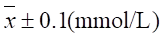
4201
某光度法测定铬的s＝0.12，若测定w(Cr)=2.52％的标准试样，得到结果的平均值为2.62％时，要使置信区间将真值包含在内，至少需测定几次?（置信度90％，u＝1.64）。
4202
以五次平行测定的统计量 和S来估计总体平均值m 时（95％置信度），应表示为
＿
。
和S来估计总体平均值m 时（95％置信度），应表示为
＿
。
4203
钢中含铬量的测定，先测定两次，w(Cr)/%＝1.12和1.15；再测定三次，结果为1.11, 1.16和1.12。试分别按两次和五次测定的数据来表示平均值的置信区间（95%置信度）。
4204
用某法测定铅锡合金中锡的质量分数，已知标准偏差为0.08%，重复四次测定，质量分数w(Sn)的平均值为62.32%，试比较置信度95%(u=1.96)和置信度为99%(u=2.58)时平均值的置信区间。计算结果说明置信区间与置信度有何关系？
4205
某铝合金试样中铝w(Al)/%测定结果为：31.28，31.35，31.20，31.24和31.27。分别计算置信度为90%和95%时平均值的置信区间。计算结果说明置信区间与置信度有何关系？已知
|
f |
2 |
3 |
4 |
|
t0.10 |
2.35 |
2.13 |
2.02 |
|
t0.05 |
3.18 |
2.78 |
2.57 |
4206
用原子吸收法和伏安法分别测定某试样中铅的质量分数w(Pb) 如下：
|
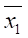 =0.74% |
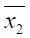 |
|||
|
s1=0.02% |
s2=0.06% |
|||
|
n1=3 |
n2=4 |
试比较两种方法所得结果是否有显著性差异（a =0.10）。单边F0.05,3.2=19.16，双边t0.10,5=2.02
4207
标钢试样中铬的质量分数w(Cr)=1.50%，光度法用一种新试剂测铬, 结果(%)为：1.48、1.42、1.52、1.53、1.45、1.40，用t检验法对新方法做出评价（显著水平0.05）。
|
f |
5 |
6 |
|
t0.05 |
2.57 |
2.45 |
4208
氯化钡试样用重量法测定钡的质量分数w(Ba)，三次结果为：56.10、56.15、56.09%；用络合滴定法测钡，三次结果为56.01、55.96、55.89%。问95%显著水平时滴定法结果是否明显偏低？(单边F0.05,2.2=19.00；双边t0.05,4=2.78, t0.10,4=2.13)
4209
对w(Fe)=5.26%的某标样进行五次测定，结果为(%)：5.01、5.11、4.92、4.95、4.80。用格鲁布斯法检验4.80是否为异常值，然后用t检验法对分析方法作出评价（显著水平0.05）。已知：T0.05,5=1.67 t0.05,4=2.78。
4210
一组测量值为：20.04、20.01、20.05、20.07、20.00、20.20。分别用格鲁布斯法和Q检验法检验20.20是否为异常值（显著水平0.05）。（已知：T0.05,6=1.82 Q0.95,6=0.64）
4211
已知某铅锡合金中锡的质量分数w(Sn)=63.82%，用络合滴定法测定五次，平均值为63.87%，标准偏差0.05%。若显著水平为0.05，能否认为该方法有系统误差存在？若上述平均值为20次的测定结果，是否有系统误差？
|
f |
4 |
5 |
20 |
|
t0.05 |
2.78 |
2.57 |
2.09 |
4212
用伏安法测某患者血清中Pb2+的质量浓度r(Pb2+)/(mg/L)，八次测量结果为：0.063、0.081、0.058、0.070、0.078、0.078、0.074、0.070。若正常人血清中铅质量浓度为0.066mg/L，能否说此人血清中铅含量高（显著水平0.05）。t0.05,7=2.36, t0.10,7=1.90
4213
用氧化还原法分析含Mn的标准钢样，已知w(Mn)=2.75%，四次结果为2.62%、2.70%、2.75%、2.78%，能否认为结果偏低？（显著水平0.05）
|
f |
t0.10 |
t0.05 |
|
3 |
2.35 |
3.18 |
4214
测定矿石中Fe2O3的质量分数，采用氧化还原法和光度法各测定四次，结果分别为 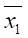 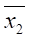
4215
氧化还原法测定某矿石中Cr2O3的质量分数w(Cr2O3)/%，结果为：1.40,1.44,1.37,1.21。计算平均值、标准偏差和95%置信度时平均值的置信区间。
|
f |
3 |
4 |
5 |
|
t0.05 |
3.18 |
2.78 |
2.57 |
4216
测定某试样中锰的质量分数w(Mn)，五次测定的平均值为1.48%，标准偏差为0.09%。试比较置信度分别为90%和95%时平均值的置信区间。
|
f |
3 |
4 |
5 |
|
t0.10 |
2.35 |
2.13 |
2.02 |
|
t0.05 |
3.18 |
2.78 |
2.57 |
4217
要使置信度90%的平均值的置信区间不超过±s和±2s，问至少各应平行测定几次？结果说明什么？
|
f |
1 |
2 |
3 |
4 |
5 |
|
t0.10 |
6.31 |
2.92 |
2.35 |
2.13 |
2.02 |
4218
测得某试样中钒的质量分数w(V)/%为：1.20, 1.27, 1.22, 1.15, 1.30。计算置信度95%时平均值的置信区间。
|
f |
4 |
5 |
6 |
|
t0.05 |
2.78 |
2.57 |
2.45 |
4219
要使平均值的置信区间不超过±s，若置信度分别为90%和95%时，至少应各测定几次？可以得出什么结论？
|
f |
3 |
4 |
5 |
6 |
|
t0.10 |
2.35 |
2.13 |
2.02 |
1.94 |
|
t0.05 |
3.18 |
2.78 |
2.57 |
2.45 |
4220
测定某一w(Mn)=2.85%标准钢样的w(Mn)/%，结果为：2.75,2.78,2.62,2.70。计算95%置信度的平均值置信区间。此区间是否包含真值在内？若置信度定为99%，是否包含真值在内？
|
f |
3 |
4 |
|
t0.05 |
3.18 |
2.78 |
|
t0.01 |
5.84 |
4.60 |
4221
某厂产品杂质的质量分数小于1.00%即为合格，检验方法的s =0.08%。改革工艺后，对产品杂质的质量分数进行六次分析，结果的平均值为0.92%，问杂质的质量分数是否明显降低？（显著水平0.05）
|
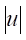 |
1.6 |
1.7 |
1.8 |
|
概率 |
0.445 |
0.455 |
0.464 |
4222
电分析方法测定某试样中抗坏血酸的质量分数(%)为：1.05、1.09、1.11、1.18%；氧化还原滴定法测定结果(%)为：1.01、1.08、1.12。比较两种方法的精密度是否有显著性差异（显著水平0.10）
F0.05 的值( 单边 )
|
|
f大 |
|
|
f小 |
2 |
3 |
|
2 |
19．00 |
19．16 |
|
3 |
9．55 |
9．28 |
4223
用两种方法测定同一试样，结果的标准偏差分别为：s1=0.12,s2=0.09，测定次数n1=5, n2=6。试比较两种方法的精密度是否显著？（显著水平0.10）
F0.05 的值( 单边 )
|
|
f大 |
||
|
f小 |
4 |
5 |
6 |
|
4 |
6.39 |
6.26 |
6.16 |
|
5 |
5.19 |
5.05 |
4.95 |
|
6 |
4.53 |
4.39 |
4.28 |
4224
标定某NaOH标准溶液的浓度(mol/L)为：0.2034，0.2031，0.2036，0.2046, 与参考值0.2030比较是否差异显著（显著水平0.05）？若再测定一次为0.2035，用格鲁布斯法检验0.2046这个值是否应舍掉，然后与参考值比较是否有显著差异？已知：T0.05,5 =1.67, t0.05,3 = 3.18, t0.05,4 = 2.78
4225
用基准物质Na2CO3标定HCl溶液的浓度，结果(mol/L)为：0.2034, 0.2031, 0.2036, 0.2046。问0.2046这个值是否应舍掉（格鲁布斯法，显著水平0.05）？再测定一次结果为0.2035，那么0.2046是否舍掉？平均值是多少？计算95%置信度时平均值的置信区间。
|
n |
4 |
5 |
|
f |
3 |
4 |
|
T0.05 |
1.46 |
1.67 |
t0.05 |
3.18 |
2.78 |
4226
工业纯碱中总碱度的测定结果w(Na2O)/%为48.45、48.28、48.42，用格鲁布斯法判断48.28%是否应舍掉？若再测定一次结果为48.44%，那么48.28%是否舍掉？计算置信度95%时总体均值m的置信区间。与合格标准48.50%是否有显著差异？
|
n |
3 |
4 |
|
f |
2 |
3 |
|
T0.05 |
1.15 |
1.46 |
|
t0.05 |
4.30 |
3.18 |
4227
食醋中醋酸的质量分数w(HAc) 不得超过5.00% ，今对一批产品进行分析，结果为(%)：5.02, 5.09, 5.04 和5.13。问该批产品是否需要重新勾兑（显著水平0.05）？附双边t表
|
f |
3 |
4 |
|
t0.05 |
3.18 |
2.78 |
|
t0.10 |
2.35 |
2.13 |
4228
用氧化还原法测定钢中锰的质量分数(%)为2.35,2.42,2.46,2.31 。用络合滴定法测定结果(%)为：2.41,2.39,2.49,2.55 。试比较两组结果是否有显著性差异（ 显著水平0.10）。
F0.05 的值( 单边 )
|
|
f大 |
|
|
f小 |
3 |
4 |
|
3 |
9.28 |
9.12 |
|
4 |
6.59 |
6.39 |
|
F |
5 |
6 |
7 |
8 |
|
T |
2.02 |
1.94 |
1.90 |
1.86 |
4229
某碱厂生产的工业纯碱总碱度w(Na2CO3)³80.0% 即为合格产品，分析方法是经典的酸碱滴定法，方法标准偏差s = 0.09%。改革生产工艺后五次分析结果平均值为80.72%，问纯度是否有明显提高（显著水平0.05）。(u 0.05=1.96, u0.10= 1.64 )
4230
已知某标准试样水分的质量分数w(H20)=1.31%，三次测定结果(%)为1.28, 1.26, 1.29 。
(1)计算绝对误差和相对误差
(2)平均值与已知值比较是否有显著性差异（显著水平0.05）？
|
f |
2 |
3 |
|
t0.05 |
4.30 |
3.18 |
4231
在下列表述中不能提高分析结果准确度的是----------------------------------------（ ）
（A） 选择合适的方法
（B） 校准所用的仪器
（C） 做空白试验检验试剂纯度
（D） 做平行实验时称量试样的质量完全一样
4232
在无系统误差时，能提高分析结果准确度的表述是-------------------------------（ ）
（A） 选用灵敏度高的仪器
（B） 几份试样的质量相同
（C） 平行实验的操作完全一样
（D） 适当增加平行测定的次数
4233
做对照试验的目的是----------------------------------------------------------------------（ ）
（A） 提高实验的精密度
（B） 使标准偏差减小
（C） 清除随机误差
（D） 检查系统误差是否存在
4234
下列做法中不属于对照试验的是---------------------------------------------------------（ ）
（A） 用标准试样对照
（B） 用其它可靠的分析方法对照
（C） 做平行实验对照
（D） 不同实验室进行对照
4235
不能用作对照试验的试样是-------------------------------------------------------------（ ）
(A) 标准试样
(B) 管理试样
(C) 组成类似的试样
(D) 人工合成试样
4236
下面做法中不能检查系统误差的是----------------------------------------------------（ ）
（A） 空白试验
（B） 平行测定
（C） 对照试验
（D） 回收试验
4237
为了减小随机误差可采取的方法是----------------------------------------------------（ ）
(A) 做空白试验
(B) 做对照试验
(C) 进行回收试验
(D) 增加平行测定次数
4238
光度法的相对误差为2%，称样时在下列称量结果中最合理的是 ------------（ ）
（A）0.2g (B)0.21g (C)0.213g (D)0.2138g
4239
对某NaOH溶液标定了四次，平均值为0.1258mol/L , 其中三次的偏差为0.0004mol/L ， -0.0006mol/L , 0.0003mol/L 。另一次的结果应为-----------------------( )
(A)0.1259mol/L (B)0.1258mol/L (C)0.1257mol/L (D)0.1256mol/L
4240
计算下面结果的标准偏差，并修约结果的有效数字至正确的位数
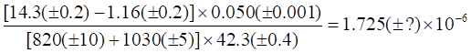
4241
算式R=313.7(±0.1)+97.0(±0.1)-14.36(±0.08)=396.34 ，括号内数据表示标准偏差，计算运算结果的标准偏差，并将结果的有效数字修约至恰当的位数。
4242
下面计算式中括号内数据表示绝对系统误差，求计算结果的相对误差和校正值，结果应如何表示？
4243
用 0.01250 mol/L（ c2 ）HCl标定25.00 mL(V1) NaOH溶液，消耗HCl 20.00 mL (V2), 已知移液管量取溶液的标准偏差为s1=0.02 mL, 滴定管每次量取溶液的标准偏差s2=0.01mL ， 计算c (NaOH)（ c1）的标准偏差，并正确表示计算结果。
4244
算式R= 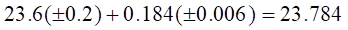
(a) 标准偏差； (b)相对标准偏差； (c)将结果的有效数字修约至恰当的位数。
4245
算式 R= 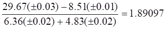
4246
算式（1）R=6.75（+0.03）+0.843（-0.001）-7.02（-0.01）=0.572
（2）R= 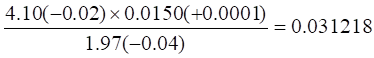
括号内的数据表示绝对系统误差，求运算结果的系统误差，并正确表示结果。
4247
在下列4个量中，不能用来表征有限次测定数据集中趋势的是--------------------（ ）
（1）
算数平均值 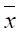
（2） 中位数M
（3） 总体平均值μ
（4） 真值
(A)1,2 (B)3,4 (C)1,3 (D)2,4
4248
在下列四种表述中说明随机误差小的是--------------------------------------------------（ ）
（1） 空白试验的结果可忽略不计
（2） 用标准试样做对照试验，结果没有显著差异
（3） 平行测定的标准偏差小
（4） 几次测定的结果都十分接近
（A）1,2 (B)3,4 (C)1,3 (D)2,4
4249
在下列四种表述中说明系统误差小的是-----------------------------------------------------（ ）
(1) 空白试验的结果可忽略不计
(2) 用标准试样做对照试验，结果没有显著差异
(3) 平行测定的标准偏差小
(4) 几次测定的结果都十分接近
（A）1,2 (B)3,4 (C)1,3 (D)2,4
4250
在下列四个数据中，两位有效数字的是-----------------------------------------------------（ ）
（1）1.80 （2）0.180
（3）Ka=1.8×10-5 （4）pH=1.80
(A)1,2 (B)3,4 (C)1,4 (D)2,3
4251
下面四种表述中正确的是-----------------------------------------------------------------------（ ）
（1） 分析结果与真实值之间差别越小，准确度越高
（2） 分析结果与平均值差别越小，准确度越高
（3） 精密度是分析结果与真实值的接近程度
（4） 精密度是几次平行测定结果相互接近的程度
（A）1,2 (B)3,4 (C)1,4 (D)2,3
4252
关于准确度与精密度关系的四种表述中正确的是------------------------------------------( )
(1) 精密度是保证准确度的必要条件
(2) 高的精密度一定能保证高的准确度
(3) 精密度差，所测结果不可靠，再衡量准确度没有意义
(4) 只要准确度高，不必考虑精密度
（A）1,3 (B)2,4 (C)1,4 (D)2,3
4253
下列四种有关误差的表述中，正确的表述是------------------------------------------------( )
(1) 绝对误差是测定值与真值之差
(2) 相对误差是绝对误差在真值中所占的百分率
(3) 绝对误差与相对误差的符号相反
(4) 绝对误差大，相对误差一定大
（A）1,2 (B)3,4 (C)1,3 (D)2,4
4254
下面四种情况中能造成系统误差的是------------------------------------------------------（ ）
(1) 在空气中放置的基准物质直接进行称量
(2) 指示剂选择错误
(3) 容量仪器未经校准
(4) 过滤沉淀时发生穿滤
（A）1,2 （B）1,3 (C)2,3 (D)2,4
4255
以下产生误差的四种表述中，属于随机误差的是---------------------------------------（ ）
(1) 指示剂变色点与化学计量点不一致
(2) 滴定管读数最后一位估计不准
(3) 称量过程中天平零点稍有变动
(4) 天平的砝码未经校准
（A）1,2 (B)3,4 (C)2,3 (D)1,4
4256
以下产生误差的四种表述中，属于系统误差的是----------------------------------------（ ）
（1） 指示剂变色点与化学计量点不一致
（2） 滴定管读数最后一位估计不准
（3） 称量过程中天平零点稍有变动
（4） 天平的砝码未经校准
（A）1,2 (B)3,4 (C)2,3 (D)1,4
4257
下列四种表述中正确的是------------------------------------------------------------------------（ ）
(1) 绝对误差是测定值与真值之差
(2) 偏差是测定值与平均值之差
(3) 在清除系统误差的前提下，误差为0
(4) 总体平均值就是真值
（A）1,2 (B)2,4 (C)3,4 (D)1,4
4258
下面有关系统误差的表述中，正确的是-----------------------------------------------------（ ）
(1) 系统误差是由某种固定的原因造成的
(2) 具有单向性
(3) 当进行重复测定时会重复出现
(4) 其大小、正负都不固定
(A) 1、2、4 (B)1、3、4 (C)2、3、4 (D)2、3、1
4259
下列四种表述中，正确的是--------------------------------------------------------------------（ ）
(1) 系统误差能找出原因，因此可以消除
(2) 增加平行测定次数可提高测量的精密度
(3) 系统误差在理论上说是可以测定的
(4) 随机误差可以通过校正的方法消除
（A）1,4 (B)2,3 (C)2,4 (D)3,4
4260
下面关于误差的表述中属于系统误差的是---------------------------------------------------（ ）
(1) 由某些难以控制、无法避免的偶然因素造成
(2) 由某种固定的原因造成
(3) 正负、大小都有一定的规律性
(4) 大小、正负都不固定
（A）1,2 (B)2,3 (C)1,4 (D)2,4
4261
下面关于误差的表述中，属于随机误差的是-----------------------------------------------（ ）
（1） 由某些难以控制、无法避免的偶然因素造成
（2） 由某种固定的原因造成的
(3） 在一次试验中误差的正负、大小都有一定的规律性
（4） 在一次试验中误差的大小、正负都不固定
（A）1,2 (B)2,3 (C)1,4 (D)2,4
4262
下列几种误差属于系统误差的是 -------------------------------------------------------------( )
(1) 方法误差
(2) 操作误差
(3) 仪器和试剂误差
(4) 环境的温度、湿度、灰尘等造成的误差
（A）1,3,4 (B)1,2,4 (C)1,2,3 (D)2,3,4
4263
下面四种表述中正确的是-----------------------------------------------------------------------（ ）
(1) 绝对误差大，相对误差就一定大
(2) 绝对误差是正的，相对误差一定为正
(3) 校正值与绝对误差相等
(4) 绝对误差为正，校正值一定为负
（A）1,2 (B)1,3 (C)2,3 (D)2,4
4264
下面四个数据中含有非有效数字的是------------------------------------------------------（ ）
(1) 0.2081 (2) 0.02418 (3) 25.00 (4)1.000
(A)1,2 (B)3,4 (C)1,3 (D)2,4
4265
下列四个数据中为四位有效数字的是----------------------------------------------------( )
（1）0.0056 （2）0.5600
（3）0.5006 （4）0.0506
(A)1,2 (B)3,4 (C)2,3 (D)1,4
4266
下列四个数据中修改为四位有效数字后为0.5624的是------------------------------（ ）
（1）0.56235 （2）0.562349
（3）0.56245 （4）0.562451
（A）1,2 （B）3,4 (C)1,3 (D)2,4
4267
下列四个数据中是四位有效数字的是---------------------------------------------------（ ）
（1）0.2760 （2）2.7600
（3）0.0276 （4）2.760
（A）1,2 （B）3,4 （C）2,3 （D）1,,4
4268
在下列统计量中表征有限次测定数据分散程度的是---------------------------------（ ）
(1)
极差R
(2) 平均偏差 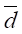
(3) 标准偏差s （4）总体标准偏差s
（A）1,3,2 （B）1,2,4 （C）1,3,4 （D）2,3,4
4269
以下四种表述中正确的是-------------------------------------------------------------------（ ）
(1) 单次测定偏差的代数和为零
(2) 平均偏差不可能为零
(3) 无限多次测定总体标准差为零
(4) 标准正态分布的总体平均值为零
（A）1,2,3 (B)1,2,4 (C)2,3,4 (D)1,3,4
4270
对标准正态分布的描述，其中正确的是--------------------------------------------------（ ）
(1) μ=0
(2) 曲线形状随s 而改变
(3)
在X= 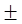
(4) s =1
（A）1,2,3 (B)2,3,4 (C)2,4,1 (D)1,4,3
4271
测定BaCl2试样中Ba的质量分数，四次测定得到置信度90%时平均值的置信区间为(62.85±0.09)%，对此区间有四种理解，其中理解全部错误的是---------------------- ( )
(1) 总体平均值μ落在此区间的概率为90%
(2) 有90%的把握此区间包含总体平均值在内
(3) 再做一次测定结果落入此区间的概率为90%
(4) 有90%的测量值落入此区间
（A）1,2,3 (B)1,2,4 (C)1,3,4 (D)2,3,4
4272
在下列4个量中表征有限次测定数据集中趋势的是--------------------------------------（ ）
(1)
算术平均值 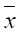
(2) 中位数M
(3) 总体平均值μ
(4) 真值
(A)1,2 (B)3,4 (C)1,3 (D)2,4
4273
下面有关随机误差的表述中正确的是---------------------------------------------------------（ ）
(1) 大、小误差出现的概率相同
(2) 正、负误差出现的概率相同
(3) 大误差出现的概率小，小误差出现的概率大
(4) 正误差出现的概率小，负误差出现的概率大
（A）1,2 (B)1,3 (C)2,3 (D)2,4
4274
下列有关总体平均值的表述中正确的是-----------------------------------------------------（ ）
(1) 随机变量有向某个中心值集中的趋势
(2) 无限多次测定的平均值既为总体平均值
(3) 总体平均值就是真值
(4) 正态分布的总体平均值为零
（A）1,2 (B)3,4 (C)1,3 (D)2,4
4275
通过样本值对总体均值作区间估计时，以下四种统计量中必不可少的统计量是----( )
(1) 样本平均值
(2) 样本标准偏差s
(3) 样本平均偏差
(4) 样本容量n
(A)1,2,3 (B)2,3,4 (C)1,2,4 (D)1,3,4
4276
下列四个术语中表征正态分布概率密度函数的两个术语是-----------------------------（ ）
（1） 体平均值μ
（2） 体标准偏差s
（3） 定次数n
（4）样本平均值
（A）1,3 (B)2,4 (C)1,2 (D)3,4
4277
下面四种表述中，正确的是----------------------------------------------------------------------( )
(1) 置信水平定得越高越好
(2) 置信水平太高，对总体平均值的估计往往失去意义
(3) 置信水平越高置信区间越宽
(4) 置信水平越高置信区间越窄
(A)1,2 (B)2,3 (C)3,4 (D)4,1
4278
四种关于置信区间的表述中不正确的是---------------------------------------------------（ ）
(1) 在一定概率下以测量值为中心包含总体平均值在内的区间
(2) 宽度和中心值做随机变动的区间以一定的概率包含总体平均值在内
(3) 以总体平值为中心的某个区间
(4) 总体平均值以一定的概率落在该区间
(A) 1,2 (B)3,4 (C)1,3 (D)2,4
4279
下面四种关于置信区间的表述中正确的是------------------------------------------------（ ）
(1) 在一定的概率下以样本平均值为中心包含总体平均值在内的区间
(2) 宽度和中心值做随机变动的区间以一定的概率包含总体平均值在内
(3) 以总体平均值为中心的某个区间
(4) 总体平均值以一定的概率落在该区间
（A）1,2 (B) 3,4 (C)1,3 (D) 2,4
4280
对于下列四种表述，全部正确的是----------------------------------------------------（ ）
(1) 增加平行测定次数可以提高分析结果的准确度
(2) 称样量要适当才能减小测量误差
(3) 做空白试验是消除系统误差的办法之一
(4) 为使分析结果准确度高，应选择仪器分析方法
(A)1,2 (B)1,4 (C)2,4 (D)3,4
4281
对于下列四种表述，不正确的是------------------------------------------------------（ ）
(1) 为了减小测量误差，称样量越大越好
(2) 仪器分析方法因使用仪器，因此准确度高
(3) 增加平行测定次数不能消除系统误差
(4) 做空白试验可消除系统误差
(A)1,2 (B)1,2,4 (C)1,3,4 (D)1,2,3
4282
滴定比较弱的酸时，欲提高准确度，拟采用下面方法,其中正确的是--------------（ ）
(1) 用返滴定法，加入过量NaOH标准溶液，用HCl标准溶液返滴定
(2) 增加试样量
(3) 降低NaOH溶液的浓度
(4) 选择合适的混合指示剂
(A)1,2 (B)3,4 (C)1,3 (D)2,4
4283
下列关于提高分析结果准确度的表述中正确的是--------------------------------------（ ）
(1) 选择灵敏度高的仪器分析方法
(2) 增加平行测定次数减小随机误差
(3) 称样量越大越好
(4) 做对照试验消除系统误差
(A)1,2 (B)1,3 (C)2,3 (D)2,4